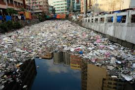

Welcome
Every day, millions of plastic bottles, bags, and straws end up in our communities and oceans. Our mission is to explore how we can reduce single-use plastic and make sustainable choices that benefit both people and the environment.

Every day, millions of plastic bottles, bags, and straws end up in our communities and oceans. Our mission is to explore how we can reduce single-use plastic and make sustainable choices that benefit both people and the environment.
Plastic pollution is a growing problem in our city. Local parks, rivers, and neighborhoods are littered with plastic waste. Stakeholders include residents, local businesses, and city government. The stakes are high: environmental damage, wildlife harm, and health risks for humans.
Thesis: Reducing single-use plastic in our community is essential for environmental sustainability and public health.

Some business owners argue that banning plastic hurts sales and increases costs. While this is a concern, alternatives such as biodegradable packaging, reusable containers, and incentives for customers can reduce costs while protecting the environment.
Everyone can make a difference! Start by using reusable bags, bottles, and straws. Advocate for local policies reducing single-use plastics. Together, we can build a cleaner, healthier community.